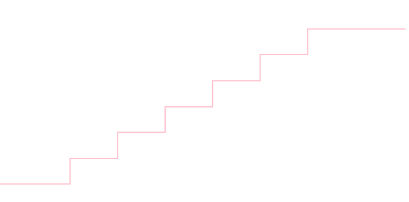

プログラマの為の
数学勉強会
第14回
(於)ワークスアプリケーションズ中村晃一
2013年12月12日
謝辞
この会の企画・会場設備の提供をして頂きました
㈱ ワークスアプリケーションズ様
にこの場をお借りして御礼申し上げます。
この資料について
- http://nineties.github.com/math-seminar に置いてあります。
- SVGに対応したブラウザで見て下さい。主要なブラウザで古いバージョンでなければ大丈夫だと思います。
- 内容の誤り、プログラムのバグは@9_tiesかkoichi.nakamur AT gmail.comまでご連絡下さい。
- サンプルプログラムはPython及びMaximaで記述しています。
擬似乱数の生成法
与えられた確率分布に従う擬似乱数を生成する方法を説明します. 有名な確率分布に従う乱数生成器は標準で用意されていると思いますが, 自前での実装が必要な場面もよくあります.
後の回に説明するモンテカルロ法の基礎となりますので大切です.
前提条件
区間 \([0,1)\) の一様分布(標準一様分布)に従う乱数(標準一様乱数)を生成する, 良質な生成器が存在する事を仮定します. \[ \rho(x) = \left\{\begin{array}{cl} 1 & (0 \leq x < 1) \\ 0 & (\text{上記以外}) \end{array}\right. \]
メルセンヌ・ツイスター法であれば間違いありません. 言語処理系の標準乱数生成器のアルゴリズムは必ず調べるようにしてください.
標準一様分布に従う変数 \(U\) で直接表すことの出来る変数は簡単です.
区間 \([a,b)\) の一様分布に従う変数 \(X\) は \[ X = a + (b-a)U \] と表す事が出来ます. よって,以下の関数で生成する事が出来ます.
from random import random
def uniform(a, b):
return a + random()*(b-a)
成功確率 \(p\) のベルヌーイ分布に従う変数 \(X\) は \[ X = \left\{\begin{array}{cl} 1 & (U \leq p) \\ 0 & (\text{上記以外}) \end{array}\right. \] と表す事が出来ます.
from random import random
def bernoulli(p):
if random() <= p:
return 1
else:
return 0
\( X_1,X_2,\ldots,X_n \) が成功確率 \(p\) のベルヌーイ分布に従うならば, 確率変数 \[ X = X_1 + X_2 + \cdots X_n \] は二項分布 \(B(n,p)\) に従うのでした.
よって正規分布に従う乱数を既与とすれば, 以下の関数で \(B(n,p)\)に従う乱数を生成出来ます.
from random import random
def binomial(n,p):
x = 0
for i in range(n):
x += bernoulli(p)
return x
この方法は \(n\) が大きい場合の計算量が問題となります. その場合は, 中心極限定理によって正規分布で近似する事が出来ます.
中心極限定理
確率変数 \(X_1,X_2,\ldots,X_n\) が期待値 \(\mu\), 標準偏差 \(\sigma\) の同一の確率分布に従い, 独立であるとする. このとき \(X_i\) の平均 \[ \overline{X} = \frac{1}{n}(X_1+X_2+\cdots +X_n) \] の従う確率分布は \(n\) が大きくなると正規分布 \(N\left(\mu, \frac{\sigma^2}{n}\right)\) に収束(弱収束)する.
また,正規表現に従う変数は以下の定理で変形されます.
正規分布の変換
\[ X \sim N(\mu,\sigma^2)\text{ならば} aX+b \sim N(a\mu + b, a^2\sigma^2) \]
【証明】
\(y=ax+b\) と変数変換を行うと,
\[ \begin{aligned}
\frac{1}{\sqrt{2\pi\sigma^2}}\exp\left\{-\frac{(x-\mu)^2}{2\sigma^2}\right\} \mathrm{d} x &= \frac{1}{\sqrt{2\pi\sigma^2}}\exp\left\{-\frac{(y-a\mu-b)^2}{2a^2\sigma^2}\right\} \frac{1}{a}\mathrm{d} y \\
&=\frac{1}{\sqrt{2\pi a^2\sigma^2}}\exp\left\{-\frac{(y-a\mu-b)^2}{2a^2\sigma^2}\right\}\mathrm{d} y
\end{aligned} \]
□
ベルヌーイ分布は \[ \text{平均}:p,\quad\text{分散}: p(1-p) \] なので, \(X_1,X_2,\ldots,X_n\) がこの分布に従う場合, \[ \overline{X} = \frac{X_1+X_2+\cdots + X_n}{n} \] は \(n\) が大きいとき正規分布 \( N\left(p, \frac{p(1-p)}{n}\right) \) に従います.
つまり, \(X = X_1 + X_2 + \cdots + X_n\) は正規分布 \( N\left(np, np(1-p)\right) \) に従いますので, 以下の関数で二項分布に従う乱数を生成する事が出来ます.
from random import gauss
from math import sqrt
def binomial(n, p):
return round(gauss(n*p, sqrt(n*p*(1-p))))
逆変換法
続いて, 逆変換法という方法を紹介します.
累積分布関数
確率測度 \(P\) に対して \[ F(x) = P(X\leq x) \] で定まる \(F(x)\) を \(P\) の 累積分布関数 という.
つまり, 確率密度で表される分布に対しては \[ F(x) = \int_{-\infty}^x \rho(x)\mathrm{d} x \] であり, 離散的な分布に対しては \[ F(x) = \sum_{\stackrel{i=0,1,\ldots,\infty}{x_i\leq x}}x_ip_i \] である.
例
指数分布の累積分布関数を求めてみましょう.
パラーメータ \(\lambda\) の指数分布の確率密度関数は \[ \rho(x) = \left\{\begin{array}{cl} \lambda e^{-\lambda x} & (x \geq 0) \\ 0 & (x < 0) \end{array}\right. \] なので, この累積分布関数は \(x \geq 0\) のとき \[ \begin{aligned} F(x)&= \int_{-\infty}^x\rho(x)\mathrm{d}x = \int_0^x \lambda e^{-\lambda x}\mathrm{d}x \\ &= [-e^{-\lambda x}]_0^x = \color{yellow}{ 1 - e^{-\lambda x} } \end{aligned} \] となります. \(x < 0\) のときは0です.
以下が \(\lambda = 5\) の指数分布の密度関数のグラフ,

以下がその累積分布関数のグラフです.
練習問題
サイコロの出目の分布(一様だと仮定)の累積分布関数を求めて下さい.
 \[ F(x) = \left\{\begin{array}{cl} 0 & (x < 1) \\ 1/6 & (1 \leq x < 2) \\ 2/6 & (2 \leq x < 3) \\ 3/6 & (3 \leq x < 5) \\ 4/6 & (4 \leq x < 5) \\ 5/6 & (5 \leq x < 6) \\ 6/6 & (6 \leq x) \\ \end{array}\right. \]
連続的な確率分布に対しては以下が成立します.
任意の連続的な確率測度 \(P\) に対して, その累積分布関数 \(F(x)\) は, \[ 0 \leq F(x) \leq 1 \] の範囲の値を取る, 単調増加関数である.
連続的な確率測度 \(P\) の, 累積分布関数を \(F(x)\) とする. この分布に従う確率変数 \(X\) に対して, 確率変数 \(F(X)\) は, 標準一様分布に従う.
【証明】
前半の命題は明らかなので省略.
後半に関して. \(F\) は単調増加関数であるから
\[ X \leq x\Leftrightarrow F(X)\leq F(x) \]
である. すなわち
\[ P(F(X)\leq F(x)) = P(X\leq x) = F(x) \]
が成立するので, \(F(x) = x'\quad (0\leq x'\leq 1)\) とおき直せば
\[ P(F(X) \leq x') = x'\quad (0 \leq x'\leq 1) \]
となる. これは \(F(X)\) が標準一様分布に従う事を示す.
□
逆変換法(連続的分布)
ある連続的確率分布 \(P\) の累積分布関数を \(F(x)\) とする. 確率変数 \(U\) が標準一様分布に従うならば, 確率変数 \( X = F^{-1} (U) \) は \(P\) に従う.
例
指数分布に従う乱数生成器を作りましょう.既に計算したように, パラーメータ\(\lambda\)の指数分布の累積分布関数は \[ F(x) = 1-e^{-\lambda x}\quad (x \geq 0) \] なので, \[ y = 1-e^{-\lambda x} \Leftrightarrow e^{-\lambda x} = 1-y \Leftrightarrow x = -\frac{1}{\lambda}\ln(1-y) \] より \[ \color{yellow}{ F^{-1}(x) = -\frac{1}{\lambda}\ln (1-x) } \] によって標準一様乱数を変換すればよいです.
\(X\) が標準一様分布に従うならば, \(1-X\) も標準一様分布に従うので, もっと単純に \[ x = -\frac{1}{\lambda}\ln u\quad (u \sim U(0,1)) \] によって生成すれば十分です.
以下がPythonでの実装例です.
from math import log
from random import random
def exponential(lam):
return -log(random())/lam
\(\lambda = 5\) として前頁の関数で生成した乱数サンプルを 1000 個作ってヒストグラム化したもの. (幅0.1の区間毎に頻度を計算.)
応用:ポアソン分布
指数分布に従う乱数を生成する事が出来たので, ポアソン分布に従う乱数も生成する事が出来ます.
復習すると, ある事象の単位時間あたりの発生回数がポアソン分布, その発生間隔が指数分布に従うのでした.
従って, 一様乱数 \(u_1,u_2,\ldots,u_n\) を次々に生成して \[ \begin{aligned} &-\frac{1}{\lambda}\ln u_1 -\frac{1}{\lambda}\ln u_2 -\cdots -\frac{1}{\lambda}\ln u_n \leq 1 \\ \Leftrightarrow & \color{yellow}{ e^\lambda u_1u_2\cdots u_n \geq 1 } \end{aligned} \] を満たす, 最大の \(n\) を返せば良いです.
以下が実装例です.
from random import random
from math import exp
def poisson(lam):
v = exp(lam) * random()
k = 0
while v >= 1:
v *= random()
k += 1
return k
逆変換法(離散的分布)
離散的な分布についても同様の事が出来ます.
ある離散的確率分布 \(P\) の累積分布関数を \(F(x)\) とする. この分布の標本を \(x_1 < x_2 < \cdots < x_n\) とする.
確率変数 \(U\) が標準一様分布に従うならば,
\[ U < F(x_i) \]
を満たす最小の \(x_i\) を確率変数 \(X\) の値とすると, \(X\) は \(P\) に従う.
例
サイコロの出目を生成する乱数生成器を作成しましょう.\(U\) が標準一様分布に従うとして, 求める確率変数 \(X\) を \[ X = \left\{\begin{array}{cl} 1 & (0\leq U < 1/6) \\ 2 & (1/6\leq U < 2/6) \\ 3 & (2/6\leq U < 3/6) \\ 4 & (3/6\leq U < 4/6) \\ 5 & (4/6\leq U < 5/6) \\ 6 & (5/6\leq U < 1) \end{array}\right. \] と定めれば良いです.
以下がPythonでのコーディング例です.
from random import random
def dice():
r = random()
for i in range(1,7):
if r < i/6.0: return i
【注】
実際には擬似乱数は離散的な値しか取らない為, この方法では均等に\(1/6\)の確率で出現するサイコロにはなりません. 完全に均等にしたい場合には, 以下の様な手段を取ります.
- 整数値の乱数を振る.(仮に32bitとすると0以上4294967295以下の値を得る.)
- 値域が6の倍数個となるように, 4294967291以上の値は捨てて振り直す.
- (6で割った余り)+1 を返す.
棄却法
逆関数の計算が困難な場合には, 以下の方法があります.
棄却法(単純版)
\([a,b]\)の範囲で密度 \(\rho (x)\) を持つ確率測度を \(P\) とする. \([a,b]\) 上の一様乱数 \(u_1\) と, \([0, c]\quad (c \geq\max \rho(x))\) 上の一様乱数 \(u_2\) を生成し, \[ u_2 \leq \rho(u_1) \] であるならば \(u_1\) を採用し, そうでなければ棄却する.
\(u_1\) が採用されるまで以上を繰り返せば, 得られた \(u_1\) は \(P\) の定める確率分布に従う.
乱数の組 \((u_1,u_2)\) は下図の長方形内の１点に対応します. 棄却法では, \(y=\rho(x)\) で囲まれた領域に点が入った場合だけ採用するという方法を取ります.
例
\([0,1]\)で確率密度関数 \[ \rho(x) = 30x(1-x)^4 \] で表される分布に従う乱数を生成してみましょう. (これはベータ分布と呼ばれる分布の1つ.)
\[ \rho'(x) = 30(1-x)^4 - 120x(1-x)^3 = 30(1-5x)(1-x)^3 \] なので, \(\rho(x)\) は \(x = \frac{1}{5}\) で最大値約\(2.5\) を取ります. よって \(c = 2.6\) と置けば十分です.
from random import random
def beta25():
while True:
u1 = random()
u2 = random() * 2.6
if u2 <= 30*u1*(1-u1)**4:
return u1
1000サンプルの乱数を生成して頻度をプロットしたのが以下の図です.
先ほどの単純な棄却法では, \(y=\rho(x)\)の外の部分(棄却域)の面積が大きいときに反復回数が増えてしまいます.
これは, 既知の確率密度関数\(y=\varphi(x)\)を上手く選んで, それを適当に縦の伸ばしたものを矩形の代わりに利用する事で改善できます.
棄却法
\([a,b]\)の範囲で密度 \(\rho (x)\) を持つ確率測度を \(P\) とする. 同じ範囲の密度関数 \(\varphi(x)\) で, \(c\)を上手く選べば\(\rho(x)\leq c\varphi(x)\) と出来るものを取る. \([a,b]\) 上の\(\varphi(x)\)に従う乱数 \(u_1\) と, \([0, c\varphi(u_1)]\) 上の一様乱数 \(u_2\) を生成し, \[ u_2 \leq \rho(u_1) \] であるならば \(u_1\) を採用し, そうでなければ棄却する.
\(u_1\) が採用されるまで以上を繰り返せば, 得られた \(u_1\) は \(P\) の定める確率分布に従う.
練習問題
先ほどの例題の分布 \(\rho(x) = 30x(1-x)^4\) は, \[ f(x) = \left\{\begin{array}{cl} 30x & (0\leq x \leq 1/10) \\ \frac{10}{3}(1-x) & (1/10\leq x \leq 1) \end{array}\right. \] によって囲む事が出来ます. これを利用してより良い乱数生成器を書いて下さい.
正規分布の乱数生成法ですが, これは必要な知識をまだ説明していないので方法だけ紹介します.
ボックス=ミュラー法
確率変数 \(X,Y\) が標準一様分布に従う時, \[ \begin{aligned} Z_1 = \sqrt{-2\ln X}\cos 2\pi Y \\ Z_2 = \sqrt{-2\ln X}\sin 2\pi Y \end{aligned} \] で定義される\(Z_1,Z_2\)は正規分布\(N(0,1)\)に従う独立な確率変数である.
推定
本節では, 調べたい集団についてそのサンプルに基いて推定を行う方法について解説します.
調べる対象の集団(確率分布)を母集団, 母集団からランダムに取り出したデータの集合を標本と呼びます.
母集団の特徴量は 母平均,母分散,母標準偏差 などの様に呼びます. 一般に,これらは母数とも呼ばれます. また, 標本の特徴量は 標本平均,標本分散,標本標準偏差 などの様に呼びます.
点推定
「母平均は \(\mu\) である」といった形で, その値をピンポイントで推定する事を 点推定 と言います.
点推定には以下の方法があります.
- 不偏推定量による推定
- 最尤推定量による推定
不偏推定量による推定
不偏推定量
母数 \(\theta\) に対する点推定量 \(\hat{\theta}\) が \[ E[\hat{\theta}] = \theta \] を満たす時, \(\hat{\theta}\) を \(\theta\) の 不偏推定量 という.
標本 \(X_1,X_2,\ldots,X_n\) に対して標本平均 \[ \overline{X} = \frac{1}{n}\sum_{i=1}^n X_i \] は母平均の不偏推定量である.
【証明】
母平均を \(\mu\) とすると 各標本について \(E[X_i] = \mu\) であるから
\[ \begin{aligned}
&E\left[\frac{X_1+X_2+\cdots +X_n}{n}\right] = \frac{1}{n}(E[X_1]+E[X_2]+\cdots + E[X_n]) \\
&= \frac{\mu+\mu+\cdots+\mu}{n} = \mu
\end{aligned} \]
□
標本 \(X_1,X_2,\ldots,X_n\) に対して \[ \frac{1}{n-1}\sum_{i=1}^n(X_i-\overline{X})^2 \] は母分散の不偏推定量である.
\( (\text{標本数})-1 \) で割り算をしている事に注意してください.
【証明】
母平均を \(mu\), 母分散を \(\sigma^2\) とおくと, \(E[X_i]=\mu, V[X_i]=\sigma^2\) である. また
\[ s^2 = \frac{1}{n-1}\sum_{i=1}^n(X_i-\overline{X})^2 \]
とおく. ここで
\[ \begin{aligned}
(X_i - \overline{X})^2 &= \{(X_i-\mu)-(\overline{X}-\mu)\}^2 \\
&(X_i-\mu)^2 + (\overline{X}-\mu)^2 -2(X_i-\mu)(\overline{X}-\mu)
\end{aligned} \]
より
\[ \begin{aligned}
\sum_{i=1}^n(X_i-\overline{X})^2 &= \sum_{i=1}^n (X_i-\mu)^2 + n(\overline{X}-\mu)^2 - 2n(\overline{X}-\mu)^2 \\
&= \sum_{i=1}^n (X_i-\mu)^2 - n(\overline{X}-\mu)^2
\end{aligned} \]
である.
ここで, \(E[\overline{X}]=\mu\) である事に注意すれば \[ \begin{aligned} E[(\overline{X}-\mu)^2] &= V[\overline{X}] = V\left[\frac{1}{n}(X_1+X_2+\cdots+X_n)\right] \\ &= \frac{1}{n^2}(V[X_1]+V[X_2]+\cdots+V[X_n]) = \frac{1}{n}\sigma^2 \end{aligned} \] となるから, \[ \begin{aligned} E[s^2] &= \frac{1}{n-1}\left\{ \sum_{i=1}^n E[(X_i-\mu)^2] - n\cdot \frac{\sigma^2}{n} \right\} \\ &= \frac{1}{n-1}(n\sigma^2 - \sigma^2) \\ &= \sigma^2 \end{aligned} \] □
実験をしてみましょう. パラメータ \(\lambda\) のポアソン分布(母平均も母分散も\(\lambda\))に従う乱数を100個生成して母平均・母分散を推定してみます.
>>> import numpy as np
>>> N = 1000
>>> data = np.random.poisson(5, N)
>>> np.average(data)
4.9359999999999999
>>> np.var(data, ddof=1) # 不偏分散
4.7466506506506221
>>> np.var(data) # 標本分散
4.7419039999999715
最尤推定量による推定
最尤推定量
標本 \(X_1,X_2,\ldots,X_n\) が母数 \(\theta\) の確率分布に従うとし, その同時確率密度関数を \[ f(X_1,X_2,\ldots,X_n\,\mid\,\theta) \] とする(母集団が離散的な場合は同時確率関数とする.). 得られた標本 \((X_1,X_2,\ldots,X_n)=(x_1,x_2,\ldots,x_n)\) に対して \[ L(\theta\,\mid\,x_1,x_2,\ldots,x_n) = f(x_1,x_2,\ldots,x_n\,\mid\,\theta) \] を尤度関数と呼び, \(L\) が最大となる\(\theta\)を 最尤推定量という.
最尤推定量とは, 標本の得られる確率が最大となる推定量です.
例
サイコロを100回投げて, 18回1の目が出たとします. 1の目が出る確率 \(p\) の最尤推定量を求めましょう.
18回1の目が出る確率は \[ P = \binom{100}{18}p^{18}(1-p)^{82} \] です. これを \(p\) で微分すれば \[ \begin{aligned} \frac{\mathrm{d}P}{\mathrm{d} p} &= \binom{100}{18}\left\{18p^17(1-p)^{82}-82p^{18}(1-p)^{81}\right\} \\ &= \binom{100}{18}p^{17}(1-p)^{81}(18-100p) \end{aligned} \] となるので, \(p = \frac{18}{100} = 0.18\)が最尤推定量となります.
同時確率関数・同時密度関数は積の形になる事が多いので, 対数を取って利用する事が多いです. 対数関数は単調増加するので, 対数尤度が最大となる \(\theta\) は最尤推定量と同じです.
対数尤度
尤度関数 \[ L(\theta\,\mid\,x_1,x_2,\ldots,x_n) = f(x_1,x_2,\ldots,x_n\,\mid\,\theta) \] に対して, \[ \ln L(\theta\,\mid\, x_1,x_2,\ldots,x_n) \] を 対数尤度関数 という.
正規分布の最尤推定量
標本 \(X_1,X_2,\ldots,X_n\) が同一の正規分布に従う独立な確率変数であるならば, 標本平均・標本分散が母平均・母分散の最尤推定量となる.
【証明】
母平均を\(\mu\),母分散を\(\sigma^2\) とすると, 同時確率密度関数は
\[ \rho(x_1,x_2,\ldots,x_n) = \prod_{i=1}^n \frac{1}{\sqrt{2\pi\sigma^2}}\exp\left\{-\frac{(x_i-\mu)}{2\sigma^2}\right\} \]
であるから, 対数尤度関数は
\[ \begin{aligned}
\ln L(\mu,\sigma^2) &= \sum_{i=1}^n \ln\left[\frac{1}{\sqrt{2\pi\sigma^2}}\exp\left\{-\frac{(x_i-\mu)}{2\sigma^2}\right\} \right] \\
&= n\ln\frac{1}{\sqrt{2\pi\sigma^2}} - \frac{1}{2\sigma^2}\sum_{i=1}^n(x_i-\mu)^2
\end{aligned} \]
となる. これを \(\mu,\sigma^2\) で偏微分すれば
\[ \begin{aligned}
\frac{\partial }{\partial \mu} \ln L(\mu,\sigma^2) &= \frac{1}{\sigma^2}\sum_{i=1}^n (x_i-\mu) \\
\frac{\partial}{\partial(\sigma^2)}\ln L(\mu,\sigma^2) &= -\frac{n}{2\sigma^2}+\frac{1}{2\sigma^4}\sum_{i=1}^n(x_i-\mu)^2
\end{aligned} \]
従って, 対数尤度が最大となるのは \[ \begin{aligned} \mu &= \frac{1}{n}\sum_{i=1}^n x_i \\ \sigma^2 &= \frac{1}{n}\sum_{i=1}^n(x_i-\mu)^2 \end{aligned} \] のときである. □
指数分布の最尤推定量
標本 \(X_1,X_2,\ldots,X_n\) がパラメータが\(\lambda\)の同一の指数分布に従う独立な確率変数であるならば, \[ \frac{1}{\text{標本平均}} \] が\(\lambda\)の最尤推定量である.
【証明】
対数尤度関数は
\[ \ln L(\lambda) = \ln\prod_{i=1}^n \lambda e^{-\lambda x_i} = \ln\left(\lambda^n e^{-\lambda \sum_{i=1}^n x_i}\right) = n\ln\lambda-\lambda\sum_{i=1}^nx_i \]
であるので,
\[ \frac{\mathrm{d}}{\mathrm{d}\lambda}\ln L(\lambda) = \frac{n}{\lambda} - \sum_{i=1}^n x_i \]
となる. よって, \(L(\lambda)\) が最大となるのは,
\[ \frac{n}{\lambda}-\sum_{i=1}^n x_i=0\Leftrightarrow \lambda=\frac{n}{\sum_{i=1}^nx_i} \]
のときである.
□
例
あるWebサービスへのアクセスの間隔を10サンプル測定しました(単位:ミリ秒). \[ 0.5, 34.7, 5.0, 13.5, 11.7, 7.0, 0.7, 8.1, 26.7, 9.0 \] アクセスの間隔が指数分布に従うと仮定した場合, このWebサービスの1秒あたりの平均アクセス数を最尤推定によって推定しましょう.標本平均は\( \frac{0.5+34.7+5.0+13.5+11.7+7.0+0.7+8.1+26.7+9.0}{10}=11.69\)なので, \(\lambda\) の最尤推定量は\(1/11.69\approx 0.086\) となります. 指数分布では, 1単位時間あたり平均して\(\lambda\)回イベントが発生するのですから, 1秒あたりの平均アクセス数は約86回と推定する事が出来ます.
ポアソン分布の最尤推定量
標本 \(X_1,X_2,\ldots,X_n\) がパラメータが\(\lambda\)の同一のポアソン分布に従う独立な確率変数であるならば, 標本平均が\(\lambda\)の最尤推定量である.
【証明】
対数尤度関数は
\[ \begin{aligned}
\ln L(\lambda) &= \ln\left(\frac{\lambda^{x_1}e^{-\lambda}}{x_1!} \frac{\lambda^{x_2}e^{-\lambda}}{x_2!} \cdots \frac{\lambda^{x_n}e^{-\lambda}}{x_n!}\right)\\
&= -\ln(x_1!x_2!\cdots x_n!)+(\sum_{i=1}^nx_i)\ln\lambda-n\lambda
\end{aligned} \]
であるので,
\[ \frac{\mathrm{d}}{\mathrm{d}\lambda}\ln L(\lambda) = \frac{\sum_{i=1}^n x_i}{\lambda} - n \]
となる. よって, \( L(\lambda) \) が最大となるのは,
\[ \frac{\sum_{i=1}^n x_i}{\lambda} - n =0\Leftrightarrow \lambda=\frac{\sum_{i=1}^n x_i}{n} \]
の時である.
□
区間推定
「母平均は95%の確率で～から～の範囲にある」といった形で, 特徴量の値の取る範囲とその確率を推定する事を 区間推定 と言います.
区間推定
母数 \(\theta\) について \[ P(a \leq \theta \leq b) = 1-\alpha \] となる時,\(1-\alpha\)を信頼水準と言い, 区間 \([a,b]\) をこの信頼水準における母数\(\theta\)の信頼区間もしくは, \((1-\alpha)\times 100\) 100%信頼区間という.
\(\alpha\)の値としては例えば \(\alpha=0.05\) などがよく利用されます. この場合, 母数 \(\theta\) の95%信頼区間とは \[ P(a\leq \theta \leq b) = 0.95 \] となる \([a,b]\) という事になります.
\(\alpha\)点
\(0\leq \alpha \leq 1\)に対して \[ P(X \geq z_\alpha) = \alpha \] となる \(z_\alpha\) を上側 \(\alpha\) 点 , \[ P(|X| \geq z_\alpha) = \alpha \] となる \(z_\alpha\) を両側 \(\alpha\) 点 という.
標準正規分布は左右対称なので, 上側 \(\alpha\) 点の値が計算出来れば両側 \(\alpha\) 点も計算出来ます. よく使いそうな値だけ下に書いておきます. \[ \begin{array}{|c|c|} \hline \alpha & \text{上側$\alpha$点} \\ \hline 0.1 & 1.281552 \\ 0.05 & 1.644854 \\ 0.025 & 1.959964 \\ \hline \end{array} \]
使っている言語でのこれらの計算方法を確認しておきましょう. 以下は SciPyでの上側 \(\alpha\) 点,両側\(\alpha\)点の計算例です.
>>> from scipy import stats
>>> stats.norm.ppf(0.9) # 上側10%点 = 両側20%点
1.2815515655446004
>>> stats.norm.ppf(0.95) # 上側5%点 = 両側10%点
1.6448536269514722
母集団が\(N(\mu,\sigma^2\)\)に従っているならば, 標本平均 \[ \overline{X}=\frac{X_1+X_2+\cdots+X_n}{n} \] は\( \sim N(\mu,\sigma^2/n) \)に従います. よって \[ Y = \frac{\sqrt{n}}{\sigma}(\overline{X}-\mu) \] は標準正規分布 \(N(0,1)\) に従いますので, 両側\(\alpha\)点を\(z_\alpha\)とすれば \[ P(|Y|\leq z_\alpha)=1-\alpha\Leftrightarrow P\left(|\overline{X}-\mu|\leq \frac{\sigma}{\sqrt{n}}z_\alpha\right)=1-\alpha \] となります.
分散が既知の場合の母平均の区間推定
独立な確率変数\(X_1,X_2,\ldots,X_n\)が分散が \(\sigma^2\) の正規分布に従う場合, 信頼水準が \(1-\alpha\) の母平均の信頼区間は, 両側\(\alpha\)点を\(z_\alpha\)として, \[ \color{yellow}{ \overline{X}-\frac{\sigma}{\sqrt{n}}z_\alpha \leq \mu \leq \overline{X} + \frac{\sigma}{\sqrt{n}}z_\alpha } \] となる. 但し, \(\overline{X}\)は標本平均.
例
母分散が 10 である正規分布において, 100点の標本の平均が3であった場合の, 母平均の 95% 信頼区間を求めましょう.
\(\alpha=0.05\)の両側\(\alpha\)点の値は \(z_\alpha \approx 1.959964\) であるので 95% 信頼区間は \[ 3 - \frac{\sqrt{10}}{\sqrt{100}}1.959964 \leq \mu \leq 3 + \frac{\sqrt{10}}{\sqrt{100}}1.959964 \] つまり, 有効数字を3桁とすると\(3-0.62 \leq \mu \leq 3+0.62\)となります.
続いて,母分散が未知の場合を説明します. \(t\)分布という分布が必要になります.
\(t\)分布
確率変数\(X_1,X_2,\ldots,X_n\)が同一の正規分布 \(N(\mu,\sigma^2)\) に従うとする. \(\overline{X}\)を標本平均, \(S^2\)を不偏分散とした時, \[ T_n = \frac{\sqrt{n}}{S}(\overline{X}-\mu) \] で定まる確率変数の従う分布を自由度n-1の\(t\)分布という.
\(t\) 分布の確率密度関数の具体的な表式の導出にはガンマ関数などの知識が必要となるため省略します. 以下が自由度\(1,2,3\) の\(t\)分布の密度関数のグラフとなります.
\(t\)分布に対しても上側\(\alpha\)点,両側\(\alpha\)点が定められます. \(t\)分布も左右対称の密度関数を持つので, 上側\(\alpha\)点が計算出来れば十分です.
以下は 上側 \(\alpha\) 点の表です.
\[ \small{\begin{array}{|c|c|} \hline \text{自由度} & \alpha=0.1 & \alpha=0.05 & \alpha=0.025 \\ \hline 1 &3.07768353721 &6.3137515148 &12.7062047364\\ 2 &1.88561808316 &2.91998558036 &4.30265272991\\ 3 &1.63774435722 &2.3533634348 &3.18244630528\\ 4 &1.53320627371 &2.13184678134 &2.7764451052\\ 5 &1.47588404878 &2.01504837267 &2.57058183661\\ 6 &1.43975574726 &1.94318028039 &2.44691184879\\ 7 &1.41492392765 &1.89457860506 &2.36462425101\\ 8 &1.39681530974 &1.85954803752 &2.30600413503\\ 9 &1.3830287384 &1.83311293265 &2.26215716274\\ 10 &1.37218364111 &1.81246112281 &2.22813885196\\ \hline \end{array}} \]母分散が未知の場合の母平均の区間推定
独立な確率変数 \(X_1,X_2,\ldots,X_n\) が同一の正規分布に従い, 分散が未知であるとする. この場合,信頼水準が \(1-\alpha\) の母平均の信頼区間は,\(t\)分布の両側\(\alpha\)点を\(t_\alpha\)として, \[ \color{yellow}{ \overline{X}-\frac{S}{\sqrt{n}}t_\alpha \leq \mu \leq \overline{X} + \frac{S}{\sqrt{n}}t_\alpha } \] となる. 但し\(\overline{X},S\)は標本平均と不偏分散.
練習問題
母分散が未知の正規分布において, 100点の標本の平均が3, 不偏分散が12であった場合の, 母平均の 95% 信頼区間を求めて下さい.
既に述べましたが, 中心極限定理によって正規分布以外の分布に対しても信頼区間の計算を行う事が出来ます.
例えば, 以下のような問題を考えてみましょう.
例題
サイコロを600回振った所, 各目の出た回数が \[ \begin{array}{|c|c|c|c|c|c|} \hline 1 & 2 & 3 & 4 & 5 & 6 \\ \hline 120\text{回} & 97\text{回} & 106\text{回} & 90\text{回} & 92\text{回} & 95\text{回} \\ \hline \end{array} \] であったとします. 1の目が出る確率の95%信頼区間を求めて下さい.
母集団がベルヌーイ分布である場合の信頼水準\(1-\alpha\)の信頼区間を計算すれば良いです.
ベルヌーイ分布のパラメータを\(p\)とすれば, 母平均は\(p\),母分散は\(p(1-p)\)ですから, 母分散が既知の場合の結果を使う事が出来ます. \(n\) が十分大きいとき, 標本平均を\(\overline{X}\), 正規分布の両側\(\alpha\)点を\(z_\alpha\) とすると 信頼水準\(1-\alpha\)の信頼区間は
\[ \overline{X} - \sqrt{\frac{p(1-p)}{n}}z_\alpha \leq p \leq \overline{X} + \sqrt{\frac{p(1-p)}{n}}z_\alpha \]
となります. この両辺には未知数\(p\)が含まれてしまっているので, \(p\)について解き直します.
\[ \left| p-\overline{X} \right| ^2 \leq \frac{p(1-p)}{n}z_\alpha^2 \] と同値変形して, 両辺を \(p\) について整理すれば \[ \left(1+\frac{z_\alpha^2}{n}\right)p^2 - 2\left(\overline{X}+\frac{z_\alpha^2}{2n}\right)p + \overline{X}^2 \leq 0\] となります.
これを解いて \[ \frac{\overline{X}+\frac{z_\alpha^2}{2n}-z_\alpha\sqrt{\frac{\overline{X}(1-\overline{X})}{n}+\frac{z_\alpha^2}{4n^2}}}{1+\frac{z_\alpha^2}{n}} \leq p \leq \frac{\overline{X}+\frac{z_\alpha^2}{2n}+z_\alpha\sqrt{\frac{\overline{X}(1-\overline{X})}{n}+\frac{z_\alpha^2}{4n^2}}}{1+\frac{z_\alpha^2}{n}} \] が求める信頼区間となります. \(n\)が十分大きい場合には \(\frac{z_\alpha^2}{n}\) を無視する事ができるので, \[ \color{yellow}{ \overline{X} - \sqrt{\frac{\overline{X}(1-\overline{X})}{n}}z_\alpha \leq p \leq \overline{X} \sqrt{\frac{\overline{X}(1-\overline{X})}{n}}z_\alpha} \] となります.
ベルヌーイ分布のパラメータの区間推定
\(X_1,X_2,\ldots,X_n\) がパラメータ\(p\)のベルヌーイ分布に従う独立な確率変数であるならば, \(p\) の信頼水準 \(1-\alpha\) 信頼区間は\(n\)が十分大きい時 \[ \overline{X} - \sqrt{\frac{\overline{X}(1-\overline{X})}{n}}z_\alpha \leq p \leq \overline{X} + \sqrt{\frac{\overline{X}(1-\overline{X})}{n}}z_\alpha \] である. 但し, \(\overline{X}\) は標本平均, \(z_\alpha\) は標準正規分布の両側\(\alpha\)点.
先ほどの問題に適用してみましょう.
例
サイコロを600回振った所, 各目の出た回数が \[ \begin{array}{|c|c|c|c|c|c|} \hline 1 & 2 & 3 & 4 & 5 & 6 \\ \hline 120\text{回} & 97\text{回} & 106\text{回} & 90\text{回} & 92\text{回} & 95\text{回} \\ \hline \end{array} \] であったとします. 1の目が出る確率の95%信頼区間を求めて下さい.
以下の計算より, 求める95%信頼区間は \[ 0.2 - 0.03 \leq p \leq 0.2 + 0.03 \] つまり \(\color{yellow}{0.17\leq p \leq 0.23}\) となります.
>>> from scipy import stats
>>> from math import sqrt
>>> x_bar = 120.0 / 600
>>> z_alpha = stats.norm.ppf(0.975)
>>> sqrt(x_bar*(1-x_bar)/600)*z_alpha
0.032006077842368738
>>> x_bar
0.2
母分散の区間推定の為には以下の分布が必要になります.
\(\chi^2\)分布
\(X_1,X_2,\ldots,X_n\)が標準正規分布 \(N(0,1)\)に従う独立な確率変数であるとき, \[ Z = X_1^2 + X_2^2 + \cdots + X_n^2 \] で定まる確率変数の従う分布を自由度nの\(\chi^2\)分布といい, \(\chi^2_n\) と書く.
\(\chi^2\)分布の具体的な立式は省略します. 自由度 \(1,2,3\) についての密度関数のグラフは以下のようになっています. 正規分布・\(t\)分布と違って左右対称ではないので注意してください.
母分散の区間推定
独立な確率変数 \(X_1,X_2,\ldots,X_n\) が同一の正規分布に従うならば, 母分散\(\sigma^2\) の信頼水準\(1-\alpha\)の信頼区間は \[ \color{yellow}{ \frac{ns^2}{\chi^2_{n-1}(\alpha/2)} \leq \sigma^2 \leq \frac{ns^2}{\chi^2_{n-1}(1-\alpha/2)} } \] となる. 但し, \(\chi^2_{n-1}(\alpha)\) は自由度\(n-1\)の\(\chi^2\)分布の上側\(\alpha\)点, \(s^2\) は標本分散である.
例
正規分布に従う母集団から, 無作為に大きさ\(100\)の標本を抽出した所, 標本分散が \(6.7\) となったとします. 母分散の 95% 信頼区間を求めましょう.
以下の計算より \(5.2 \leq \sigma^2 \leq 9.1\) となります.
>>> from scipy import stats
>>> left = stats.chi2.ppf(0.975, 99) # 上側α/2点
>>> right = stats.chi2.ppf(0.025, 99) # 上側1-α/2点
>>> 100*6.7 / left
5.2171750887470614
>>> 100*6.7 / right
9.1329080522400083
今回はここで終わります。
次回は検定, 標本数の決定について説明します. 時間があれば多変量分布についても解説します.